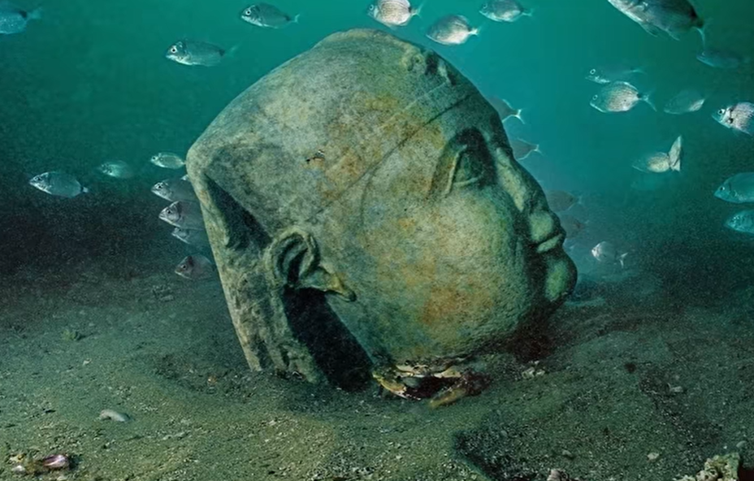

In 1996, archaeologist Frank de Geo discovered Anterhodos Island, the center of underwater culture and luxury, and the island was located in the eastern port of Alexandria, which sank due to its lack of resistance to a severe earthquake accompanied by strong storms, and while exploring the island, scientists found the remains of a palace made of marble dating back to the third century BC. It is believed that this palace was for Queen Cleopatra." It was her residence and also they found a small temple of Isis and at the entrance to the temple was a life-size granite statue. Granite as opposed to the Great Sphinx made of limestone
